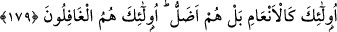

CEHENNEMLİKLERİN
ÖZELLİKLERİ
179. Andolsun, biz cinler ve insanlardan bir çoğunu cehennem için yaratmışızdır.
Onların kalpleri vardır, onlarla kavramazlar; gözleri vardır, onlarla görmezler;
kulakları vardır, onlarla işitmezler. İşte onlar hayvanlar gibidir; hatta daha da
şaşkındırlar. İşte asıl gafiller onlardır.
“Andolsun, biz cehennem için” yani oraya girmeleri ve azab olunmaları için “birçok
cin ve insan yarattık.” Cehennem, Allah Teâlâ’nın ahiretteki hapishanesidir. Dibinin
çok uzak ve derin olması sebebiyle bu ismi almıştır. Cehennemin içinde pek kızgın
ateşler ve dondurucu soğuklar vardır. Derinliği ise yüz yetmiş beş yıllık mesafedir.
Cinlerden ve insanlardan, Allah’ın ilmine göre küfürde ısrar edecekleri kesinleşmiş
bir çok kimse buraya atılacak ve burada ceza görecektir. Allah’ın, kendi hür iradesiyle
küfür üzere ısrar edeceğini bildiği kimse, kesinlikle cehennem ehlinden olacaktır.
Cinler, lâtif cisimlerdir. Çeşitli şekillere girebilirler. Akılları ve anlayışları vardır.
Ağır ve zor işleri yapmaya güçleri yeter. İnsanlardan farklıdırlar. Gözlerden saklı
oldukları (görülmedikleri) için bu ismi almışlardır.
“
”, beşer demektir. İnsan kelimesi gibi “gördü” mânâsına gelen (
) fiilinden
türemiştir. Cinler insanlardan sayı bakımından çok oldukları ve daha önce yaratıldıkları
için ayette önce onlar zikredilmiştir. Ayrıca “el-ins” kelimesi, “el-cinn” kelimesinden
daha hafiftir. Terkibde ağır olan kelimenin hafif olandan önce getirilmesi, konuşanın
şevki ve rahatı açısından daha uygundur.
Cinlerin, özellikle bizim şeriatımızla Allah’a kulluk ettikleri ve Peygamberimiz
(s.a.v.)’in hem cinlere hem de insanlara gönderilmiş bir peygamber olduğu konusunda
icmâ vardır. Cinlerin bu ümmet içerisinde olduğu gibi, geçmiş ümmetler içinde de
mükellef olduklarında şüphe yoktur. Çünkü Allah Teâlâ: “İşte onlar da kendilerine
azab sözü gerekli olmuş kimselerdir. Kendilerinden önce geçen cin ve insan
toplulukları arasında azabın içinde bulunacaklardır. Gerçekten onlar ziyana
uğrayanlardır.” (el-Ahkâf, 46/18) buyurmuştur. Burada cinlerin ve insanların birlikte
zikredilmesi, onların Allah’a kulluk edip saadete ermek için fıtrî ve mükemmel bir
isitidada sahip bulunmaları bakımındandır. Aksi halde onları mükellef tutmak doğru